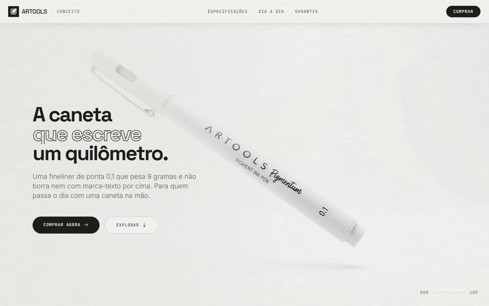
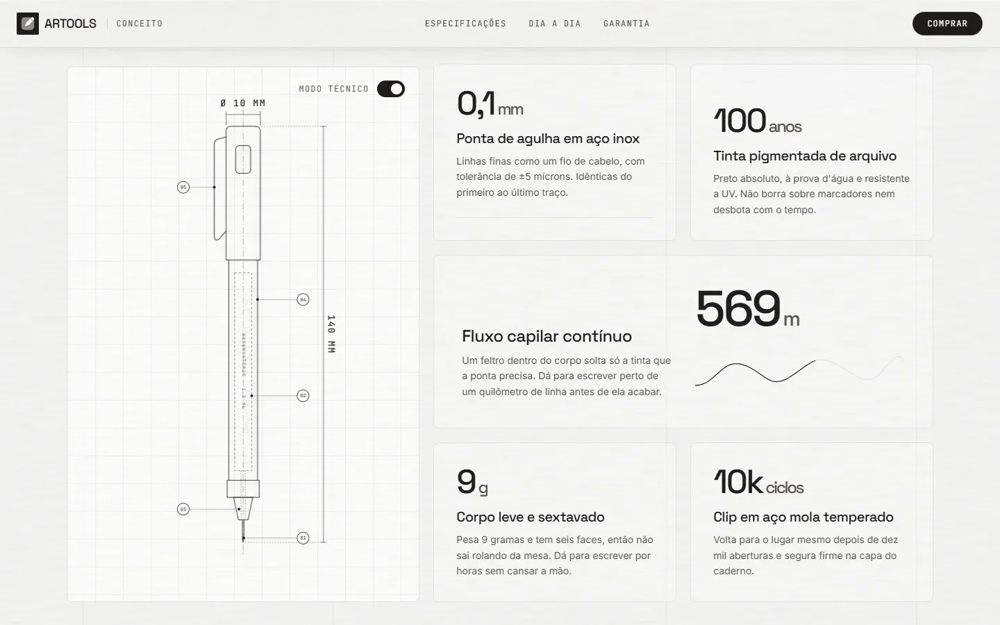
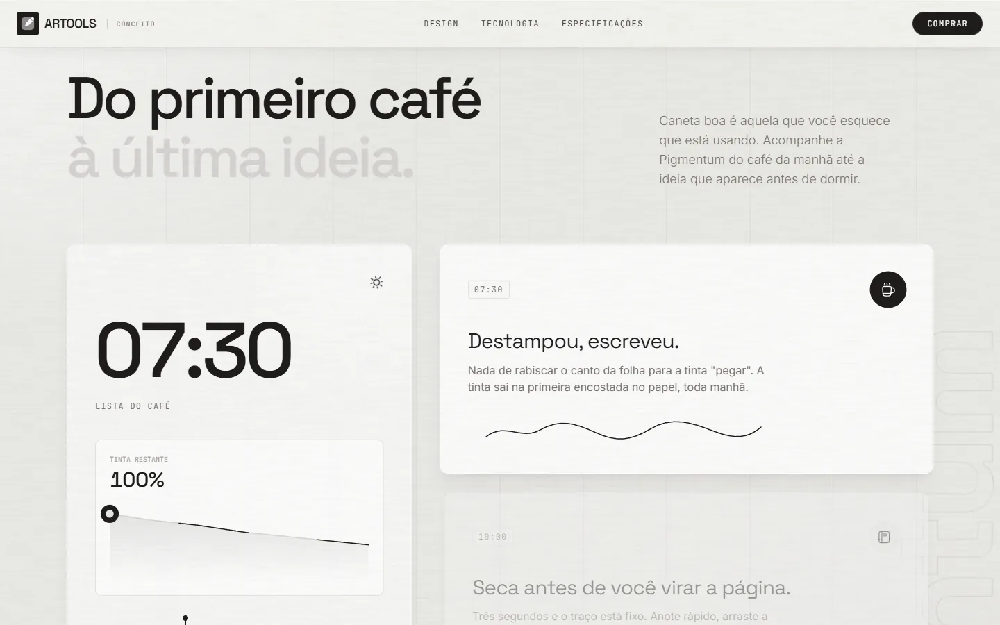
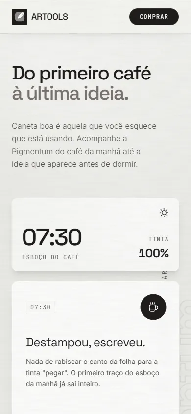
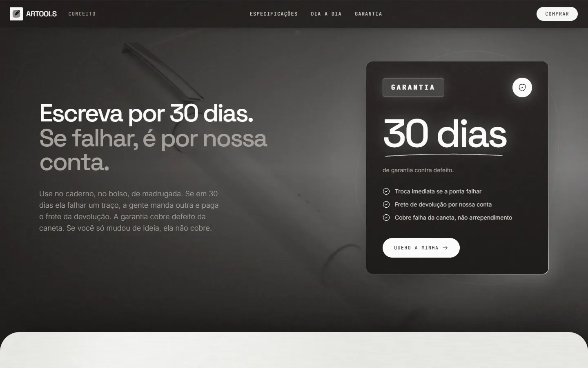
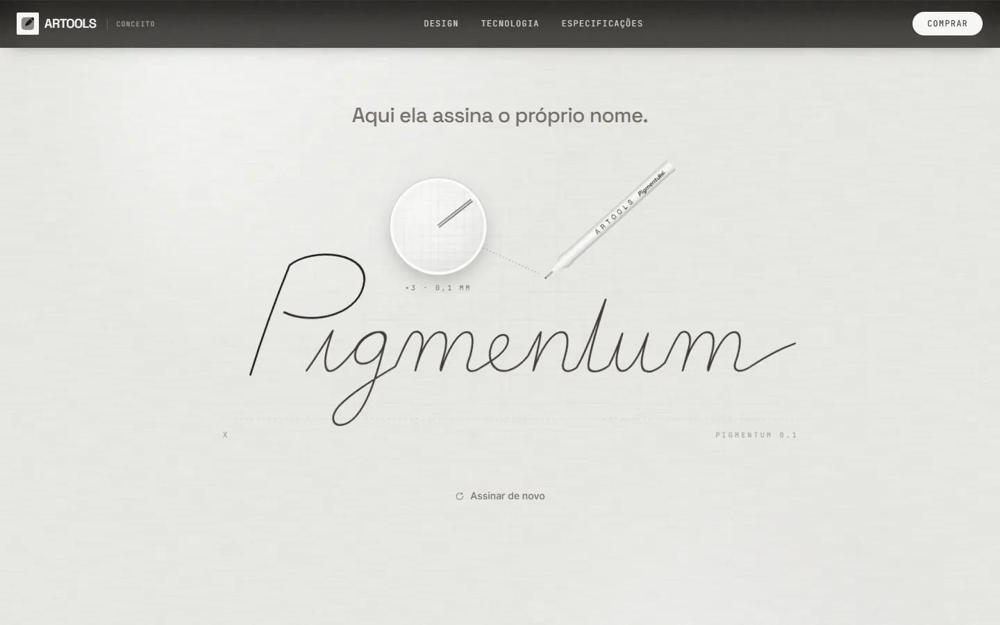
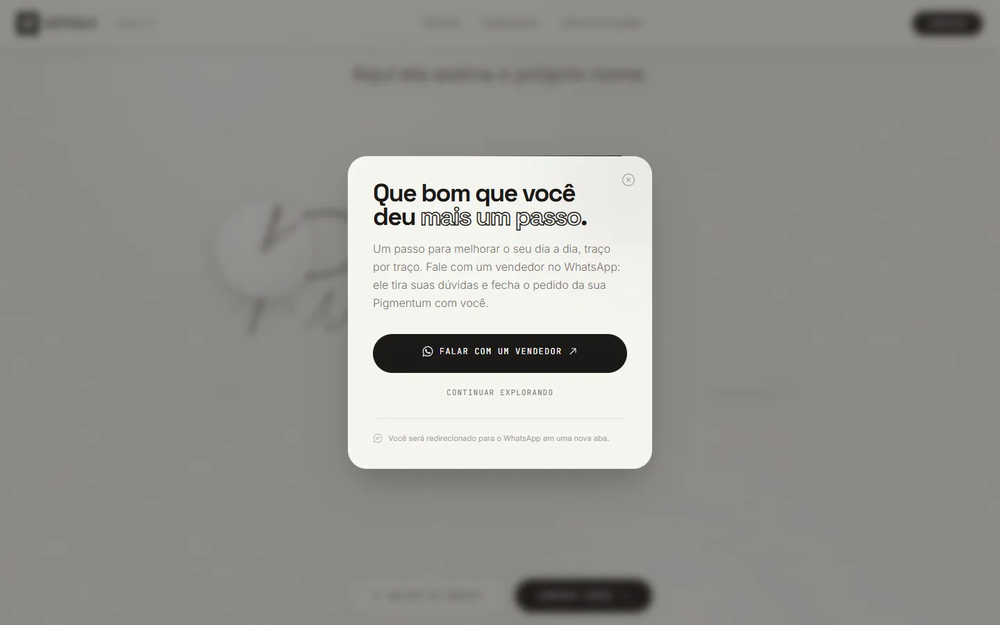
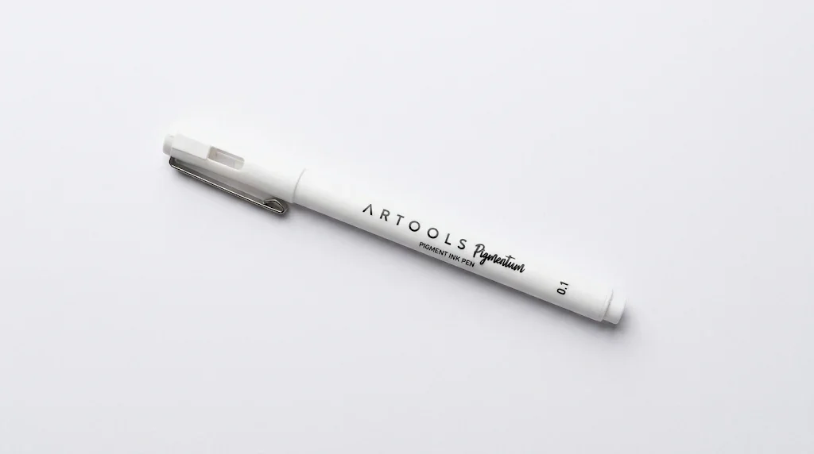
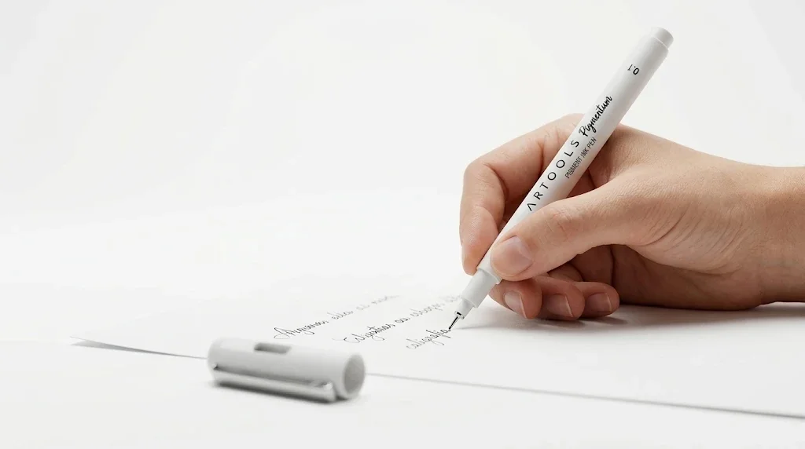

Artools Pigmentum
Como fazer uma caneta comum, que ninguém para pra olhar, parecer um produto que dá vontade de ter.
- Tipo
- Estudo pessoal, a partir de um desafio do curso da Asimov
- Meu papel
- Pesquisa de referências, direção visual, estrutura, textos e teste
- Ferramentas
- Claude e Antigravity (código), Gemini (imagens), Google Flow com Veo 3 (vídeo)
- Entrega
- Landing page responsiva em HTML, CSS e JavaScript

Resumo em 30 segundos
Escolhi as referências, defini a direção visual e a estrutura da página e conversei com 4 pessoas sobre o resultado. O código e o vídeo foram gerados com IA.
Tratar a caneta como lançamento de tecnologia. Cada seção responde a uma dúvida de quem já chegou interessado.
O vídeo e o modo técnico agradaram. A conversa mostrou que a garantia precisava ficar mais clara e que a compra funcionaria melhor por carrinho.
Testar com pessoas do público, que não me conhecem, e com tarefas. A primeira conversa foi com 4 pessoas próximas. A caneta é fictícia, por isso a página não mostra preço.
Contexto e objetivo
O ponto de partida foi um desafio do curso da Asimov: criar a landing page de um produto. O produto proposto era uma caneta, e foi isso que me interessou.
A caneta é um objeto de pouco valor, que todo mundo usa e ninguém repara. Isso me pareceu um bom teste para a landing page: mostrar como o design consegue fazer um produto comum parecer valioso.
Pensei no momento em que a pessoa chega à página. Ela já viu a caneta numa vitrine ou numa rede social e veio ao site saber mais. Já está interessada. O que falta é um motivo para escolher essa caneta e não outra.
A página serve para confirmar uma vontade que a pessoa já tem, para ela comprar sem medo de se arrepender.
A pergunta da página: "por que essa caneta e não outra?". Ela não mostra preço, porque a caneta é fictícia e não está à venda. Por isso a conversa mediu se dava vontade de ter a caneta. Disposição de pagar fica para um teste com preço.
Para quem é
Profissionais de escritório que escrevem e assinam documentos todos os dias, num perfil mais sofisticado.
Para essas pessoas, a caneta também é um acessório de estilo e status, como um relógio: pela caneta que alguém carrega, dá para ter uma ideia de quem a pessoa é.
Essa pessoa já tem várias canetas, então não compra por necessidade. Ela compra quando sai uma versão nova, quando aparece uma edição de colecionador ou quando precisa de refil para continuar com a caneta que já tem.
Refil e edição de colecionador ficaram fora desta versão e entram nos próximos passos.
Referências
Naveguei por vários sites e pelos templates indicados no curso e separei o que mais chamava atenção para um produto premium. A base veio de duas linguagens diferentes.
Referência em apresentar produto como objeto de desejo.
- Vídeo que avança com o scroll
- Fades de entrada
- Efeito de vidro nos ícones e botões
- Fundo limpo, com muito espaço em volta do produto
Sites de arquitetura vendem precisão e acabamento.
- Estética editorial e tipografia grande
- Animações suaves
- Paleta neutra de papel e tinta
- O tom de "objeto projetado", que virou o modo técnico
Apple traz o desejo e a simplicidade arquitetura traz a precisão e o projeto
Como cheguei à combinação: o que foi meu e o que foi da IA
- EuPesquisei as referências: a Apple, pela internet, e os templates do curso.
- EuEscolhi os elementos de cada uma e defini a direção da fusão: peso maior no template de arquitetura, para a página não virar uma cópia da Apple.
- ClaudeFez a fusão dos design systems e o código da página seguindo essa direção.
- EuRevisei o resultado e cortei os vícios de IA (veja em Versões).
Estrutura da página
Como a pessoa já chega interessada, cada seção responde a uma pergunta que ela faria antes de comprar.
- 1AberturaQue caneta é essa?
- 2DetalhesÉ boa mesmo?
- 3Dia a diaCombina com a minha rotina?
- 4GarantiaE se eu me arrepender?
- 5AssinaturaCombina comigo?
- 6CompraQuero.
"Que caneta é essa?"
É a primeira coisa que todo visitante vê, então é onde a impressão de produto premium precisa acontecer. O vídeo da caneta avança conforme a pessoa rola a tela, e a sofisticação aparece no próprio movimento, sem depender de texto.
"É boa mesmo?"
Selecionei os detalhes técnicos que mais impressionam (ponta de 0,1 mm, tinta pigmentada, fluxo contínuo, corpo e clip) para dar argumentos concretos à decisão de compra.
O modo técnico é um botão que mostra a caneta como desenho de projeto, com as peças internas e as medidas. Ao passar o mouse num cartão, a peça correspondente acende no desenho. Ele atende quem quer saber como a caneta funciona, e é opcional: não pesa para quem só quer ver o visual.

"Combina com a minha rotina?"
Mostra a caneta acompanhando a pessoa do primeiro café à última ideia. A mensagem é de confiança: ela está sempre disponível e não deixa a pessoa na mão, nem quando fica esquecida destampada.


"E se eu me arrepender?"
"Escreva por 30 dias. Se falhar, é por nossa conta." A garantia dá segurança e mostra que a marca confia no próprio produto. A expectativa é que quase ninguém precise usá-la.

"Combina comigo?"
Reforça o lado de estilo e status, pensando em quem assina documentos todo dia. O fundo imita papel e a caneta "assina o próprio nome" na tela. É uma prévia de como seria escrever com ela, como testar a caneta na loja.

"Quero."
Quem rolou a página inteira já está mais perto de decidir, então o botão fica bem à vista no fim. Ele também aparece na abertura, no dia a dia, na garantia e na assinatura: quem já se decidiu compra no primeiro botão que vê.
Na versão testada, a compra abria uma janela que levava ao WhatsApp. Escolhi assim pela praticidade: era a forma mais simples de fechar o fluxo sem simular uma loja. Na conversa, foi o que menos convenceu. Como a caneta é fictícia e não está à venda, hoje o botão abre um aviso de que a página é um projeto de estudo.

Design system
A paleta e as fontes vieram do template Digital Architect, que já combinava com o projeto. Mantive a base e pedi só pequenos ajustes de tom. O fundo neutro deixa a caneta em destaque.
#EAEAE5Fundo principal#1C1917Texto e botão principal#78716CTexto de apoio#FFFFFFCartões e destaquesO branco e o bege criam uma estética refinada; o bege lembra papel, e o quase preto, tinta.
Ag
Space GroteskGeométrica e moderna, com ar de tecnologia.
Aa
InterFácil de ler. Quase sempre em peso leve.
0,1
JetBrains MonoParece ficha técnica: botões, legendas e cotas.
Achado de acessibilidade: o grafite #78716C sobre o fundo papel tem contraste de 4,0:1, um pouco abaixo do mínimo recomendado para texto pequeno (4,5:1). No design system, a regra passou a ser usar #57534E (6,3:1) para texto pequeno sobre o papel.
No Figma: documentei a página publicada em um arquivo com as variáveis de cor (modos claro e escuro), os estilos de texto, os componentes, as telas desktop e mobile e uma revisão crítica com o que eu corrigiria. Abrir o arquivo no Figma (abre em nova aba)
Conversa com 4 pessoas
Mostrei a página para 4 pessoas próximas, do trabalho e de casa, e fiz perguntas sobre cada parte. Três usaram o celular e uma o computador. Ninguém disse que travou, mas eu não dei tarefas para cumprir. Com 4 pessoas próximas e sem tarefas, o resultado são indícios. Para confirmar, preciso testar com o público. Revendo a página no celular depois, achei dois problemas que a conversa não pegou: o véu atrás do título escondia a caneta no topo e as medidas do desenho técnico ficavam pequenas demais para ler. Os dois já foram corrigidos.
| Hipótese | Indício (4 pessoas) | O que ouvi |
|---|---|---|
| O vídeo da abertura passa a sensação de produto premium | Causa impacto logo na primeira tela. | |
| O botão de compra no fim ajuda quem chegou até ali | Quem estava em dúvida e foi convencida ao longo da página encontra o botão "na frente do olho" e vai direto para a compra. | |
| A garantia passa confiança | "Se eu não gostar, tenho meu dinheiro de volta." Passou confiança, mas pelo motivo errado: a garantia cobre a caneta que falhar, não quem se arrependeu. O texto promete mais do que a regra cobre. | |
| O modo técnico ajuda quem quer detalhes | Funciona para o público mais exigente, que gosta de saber como as coisas funcionam. | |
| Comprar pelo WhatsApp passa confiança | As pessoas preferem um carrinho, porque o atendimento pelo WhatsApp às vezes demora. |
Numa versão real, a compra principal seria por carrinho, e o WhatsApp ficaria como opção para quem tem dúvida ou quer algo especial, como a edição de colecionador. O carrinho também mostraria o preço, que pelo WhatsApp só aparece na conversa. Isso pode explicar parte da preferência pelo carrinho.
Foram pessoas próximas, que tendem a ser gentis, e de perfil classe média, diferente do público que defini. Por isso trato o resultado como indício. No próximo teste, eu chamaria pessoas do público que não me conhecem e daria tarefas para elas cumprirem sozinhas.
Versões
A página passou por três rodadas de ajustes depois da primeira versão. Cada uma deixou a caneta com mais cara de produto caro.
| Versão | O que mudou e por quê |
|---|---|
| Inicial | A fusão das referências, com o vídeo da abertura e as seções principais. |
| Versão 1 | Caixa de compra, fades e barra de navegação. Surgiram no processo: vendo o site tomar forma, senti falta de animações e acabamentos que o deixassem mais premium. A caixa de compra também deu um destino aos botões "Comprar". |
| Versão 2 | Tirar a "cara de IA" dos textos: trocar frases grandiosas e genéricas por fatos que a pessoa consegue imaginar (veja abaixo). |
| Final | Tirei a numeração de 01 a 05 dos cartões. Numerar cartões é um vício comum de layouts gerados por IA, e ali eles só enfeitavam, sem ajudar a leitura. |
Versão 2: texto concreto no lugar de texto grandioso
| Antes | Depois |
|---|---|
| Engenharia aeroespacial. | Feita no detalhe. |
| Feita para criadores que exigem perfeição em cada traço. | Uma fineliner de ponta 0,1 que pesa 9 gramas e não borra nem com marca-texto por cima. |
| Polímero grau aeroespacial. Leveza de pluma com rigidez estrutural. | Pesa 9 gramas e tem seis faces, então não sai rolando da mesa. |
| Um alimentador de fibras regula a tinta molécula a molécula. | Um feltro dentro do corpo solta só a tinta que a ponta precisa. |
| Scroll to control | Role a página |
Também saíram selos genéricos como "Secagem em 3s", "Zero borrões" e "pH neutro".
Como nasceu o vídeo da abertura
Criei no Gemini a imagem do primeiro quadro e a do último. Depois usei o Google Flow, com o modelo Veo 3, para gerar a transição entre os dois.


Aprendizados
Para um primeiro projeto, foi muito interessante. Aprendi sobre hierarquia visual, design system e usabilidade, e também um pouco de programação, como o uso de classes. Foram muitos conceitos novos de uma vez.
Conversar muda a opinião
Eu achava que o WhatsApp passava confiança. Na conversa, as pessoas disseram preferir um carrinho.
Texto concreto convence mais
"Não sai rolando da mesa" convence mais que "grau aeroespacial", porque a pessoa consegue imaginar.
O que foi meu
Escolhi as referências, dei a direção da fusão e cortei o que tinha cara de IA: frases grandiosas, selos genéricos e a numeração dos cartões. O código e o vídeo foram gerados com IA.
Acessibilidade se confere
Revisando o design system, vi que um cinza bonito pode não ter contraste suficiente. Agora eu confiro antes.
Se eu continuasse o projeto
Carrinho como compra principal, com o WhatsApp como apoio. Reescrever a garantia para deixar claro o que ela cobre: troca da caneta que falhar em 30 dias, não devolução por arrependimento. Venda de refil, para quem já tem a caneta. Uma edição de colecionador, para quem compra pela exclusividade. Textos que falem mais de estilo e status. Parte deles ("marca-texto, aquarela, café. Pode vir") fala de uso funcional, mais próximo de estudante ou artista do que do público que defini. Aplicar na landing o cinza mais escuro nos textos pequenos. Um novo teste com pessoas do público, com tarefas para cumprirem sozinhas.
A landing é um estudo pessoal: a Artools e a Pigmentum são fictícias, e os números do produto também.